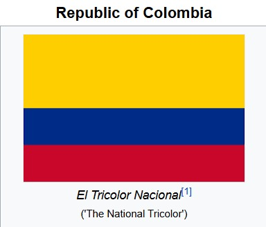

About me
My name is Miguel Posada, and I'm from Manizales, Colombia. I'm happily married and
currently expecting my first child.
Ever since I can remember, I've been passionate about airplanes, and more recently, I've discovered
a deep love for
programming. I enjoy building things from scratch and seeing the final product come to life. Outside
of work and
studies, I cherish spending time with my wife, family, and friends. Music is also a big part of my
life. I love playing
the guitar whenever I get the chance.
I served a mission in Concepción Sur, Chile and Chalco, Mexico during the pandemic. I'm currently
studying software
development at BYU-Idaho, and I absolutely love it. I consider myself someone who enjoys new
adventures and discovering
new countries and cultures. Even though I love exploring the world, I'm very patriotic. I deeply
love both Mexico, the
country that adopted me, and Colombia, the country where I was born.
Manizales, Colombia
Manizales is a charming city located in the central region of Colombia. Surrounded by mountains and known for its cool climate, it offers beautiful views and a peaceful atmosphere. The city is recognized for its strong educational presence, cultural events, and friendly community. With nearby natural parks and a lively urban center, Manizales is a great place to enjoy both nature and city life.
